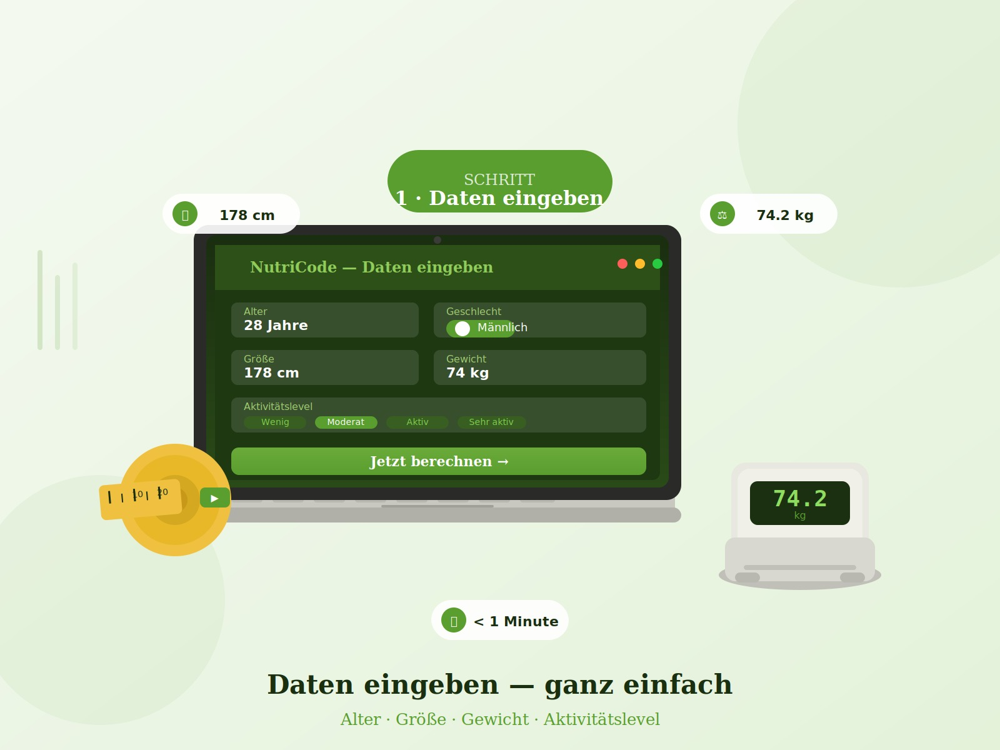
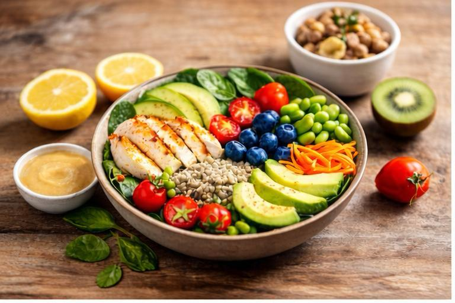
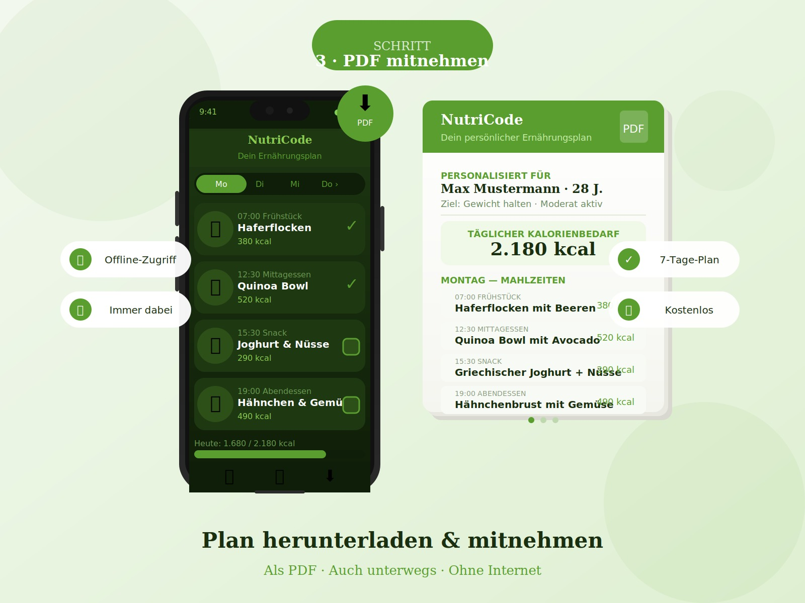

Schritt 1
Daten eingeben
Trage Alter, Größe, Gewicht, Geschlecht und dein Aktivitätslevel ein. Das Formular ist in unter einer Minute ausgefüllt – ganz ohne vorherige Anmeldung.
NutriCode berechnet deinen individuellen Kalorienbedarf anhand der Mifflin-St Jeor-Formel und erstellt mithilfe von KI einen personalisierten Ernährungsplan.
Täglicher Bedarf
2.180
kcal / Tag

Was ist NutriCode?
NutriCode ist ein webbasierter Ernährungsplaner, der dir in wenigen Schritten deinen persönlichen Tagesbedarf an Kalorien und Makronährstoffen berechnet. Die Berechnung basiert auf der wissenschaftlich anerkannten Mifflin-St Jeor-Formel und berücksichtigt Alter, Geschlecht, Größe, Gewicht und dein Aktivitätslevel.
Anschließend erstellt unsere KI einen individuell auf dich zugeschnittenen Ernährungsplan – egal ob du abnehmen, zunehmen oder dein Gewicht halten möchtest. Auch Vorlieben wie vegetarisch, vegan oder glutenfrei werden berücksichtigt, sodass dein Plan wirklich zu deinem Alltag passt.
So funktioniert's

Schritt 1
Daten eingeben
Trage Alter, Größe, Gewicht, Geschlecht und dein Aktivitätslevel ein. Das Formular ist in unter einer Minute ausgefüllt – ganz ohne vorherige Anmeldung.
Schritt 2
Plan erhalten
Unsere KI generiert auf Basis deiner Daten einen ausgewogenen Ernährungsplan mit passenden Rezepten, Mahlzeiten und genauen Nährwertangaben.

Schritt 3
PDF mitnehmen
Lade deinen Plan als PDF herunter und habe ihn jederzeit auf Smartphone oder Tablet griffbereit – auch unterwegs und ohne Internet.
Features
Schnell
Kalorienbedarf in Sekunden berechnet – ganz ohne Anmeldung.
KI-basiert
Ein individueller Ernährungsplan, generiert per KI-Schnittstelle.
PDF Export
Deinen Plan als PDF herunterladen und überall dabei haben.
Personalisiert
Berücksichtigt Alter, Geschlecht, Gewicht und deine Präferenzen.
Responsiv
Optimiert für Desktop, Tablet und Smartphone.
Sicher
Deine Daten gehören dir – sichere Authentifizierung inklusive.